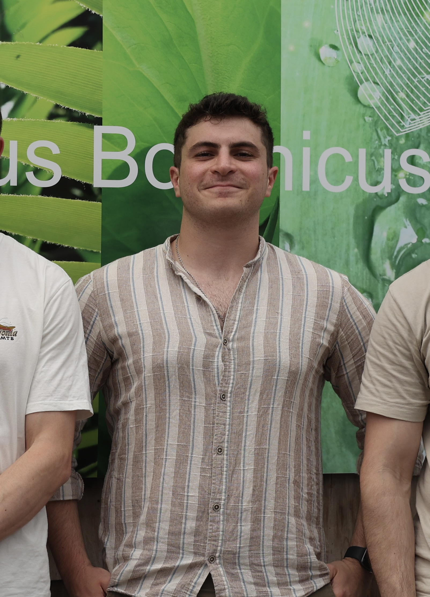

PhD Candidate in Reinforcement Learning @ TU Delft
Welcome to my personal website! I am currently pursuing my PhD in Reinforcement Learning at the Delft University of Technology. This website serves as a platform to present my academic journey, research projects, and achievements.
My work lies at the intersection of artificial intelligence and human behavior, exploring how intelligent systems can better understand and adapt to human preferences and goals. My current research focuses on developing novel algorithms for inverse reinforcement learning, with applications in various domains including robotics, autonomous systems, and the built environment.
In this work, we propose a new perspective on inverse reinforcement learning by moving from the reward-first paradigm of the current literature towards a behavior-first paradigm. We introduce a transformer-based, unsupervised behavior-first contrastive framework, CoMI-IRL, that decouples the behavioral clustering task (what happened) from the reward learning task (why it happened).
📄 Read Paper on arXivI'm always open to collaborations and discussions related to my research interests. Feel free to reach out!
Email: a.mone@tudelft.nl